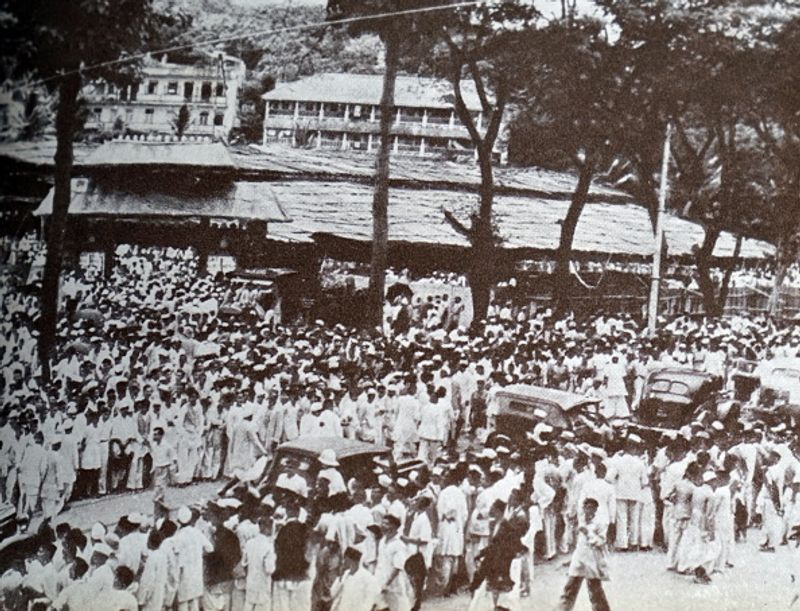
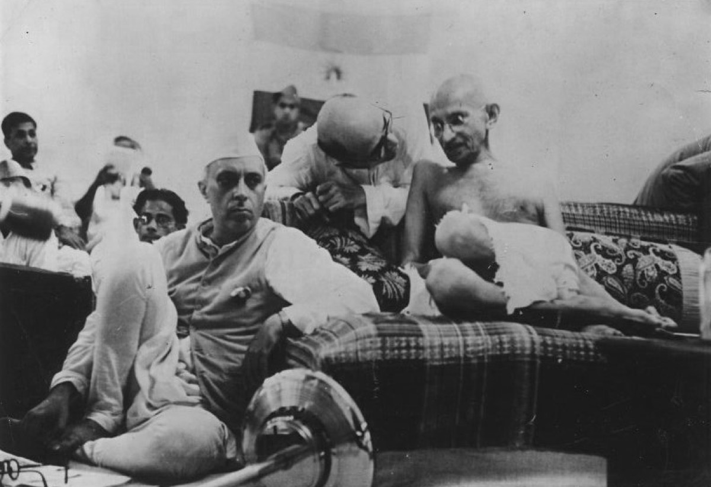
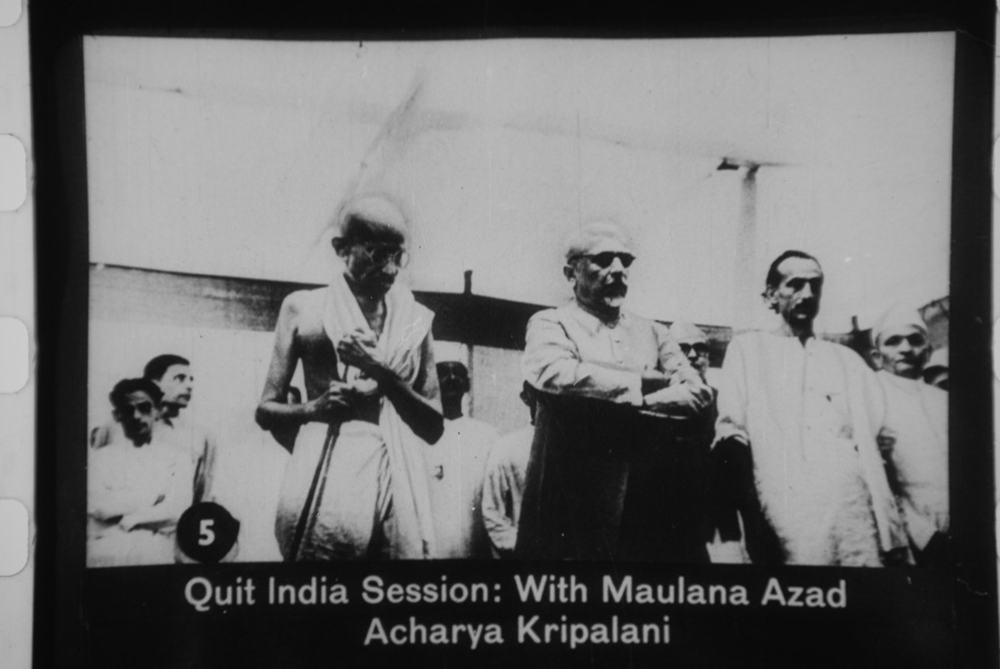
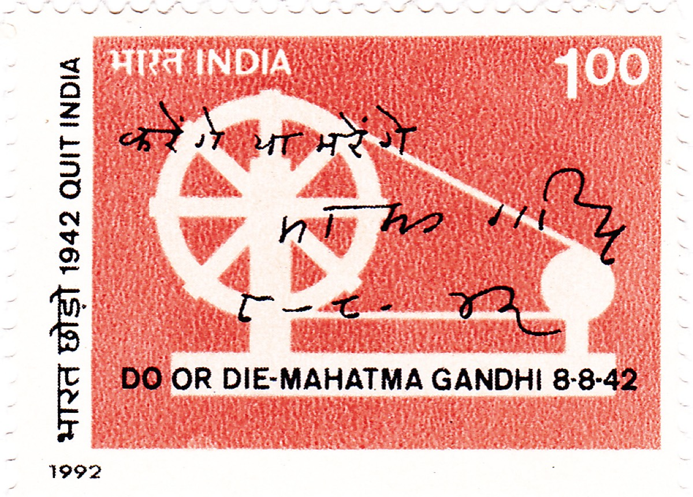
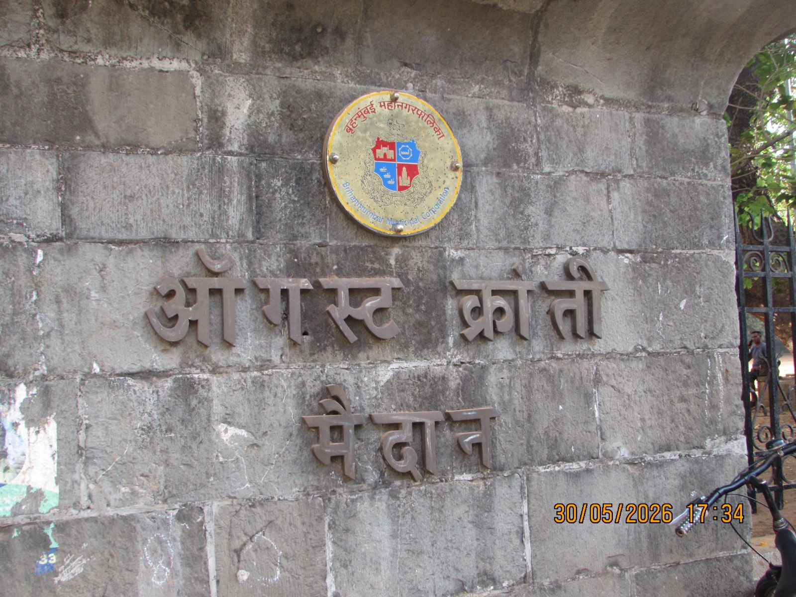

War at the Doorstep
By mid-1942 the Japanese army had overrun Burma and stood at India's borders. The British demanded Indian men and resources for the war while refusing even a promise of freedom — the contradiction at the heart of Quit India.
"Karo Ya Maro" — Do or Die. The day India's last great struggle for freedom was launched.
On a monsoon evening at Bombay's Gowalia Tank Maidan, the All India Congress Committee voted to demand that Britain quit India — immediately. Mahatma Gandhi gave the movement its immortal war cry. By dawn the empire had answered with mass arrests. This is the story of those two days, the ground they were fought on, and the storm they unleashed across the country.
Why the Congress — and its greatest session in years — came to Bombay in the burning summer of 1942.
Bombay in 1942 was the financial and political capital of British India — a roaring port city of mills, dockyards and princely mansions, where the Indian National Congress had been born in 1885 and where its All India Congress Committee (AICC) met in the great wooden pandal erected on the Gowalia Tank Maidan. The summer of that year had been one of crisis: the Cripps Mission of March–April 1942 had offered India dominion status after the war and failed, rejected by a Congress that refused to accept anything short of freedom. The Quit India Resolution had been drafted at Wardha in July by Jawaharlal Nehru and Sardar Vallabhbhai Patel and endorsed by the Congress Working Committee, which authorised Gandhi to launch a mass struggle.
Bombay was the natural stage. Its mills fed the nationalist cause, its dockworkers could bring a city to its knees, and its students and workers had always answered the Congress call. The World War was at India's eastern gates — the Japanese were in Burma, the British Empire was at its weakest — and the Congress saw its moment: withdraw the imperial power, or the freedom struggle would be fought against Indians in the name of a war they had never been asked to join.
By mid-1942 the Japanese army had overrun Burma and stood at India's borders. The British demanded Indian men and resources for the war while refusing even a promise of freedom — the contradiction at the heart of Quit India.
Sir Stafford Cripps arrived in Delhi in March 1942 with a post-war dominion offer. Congress demanded immediate self-government; the offer collapsed, confirming nationalist suspicion that the Raj would never leave willingly.
Congress ministries had resigned in 1939 protesting India's forced entry into the war. By 1942 the party controlled the language of politics — and its leadership was determined to strike while the empire was weakest.
Bombay's mill workers, dockhands, students and traders were the most organised labour force in India. The Congress knew that a call issued here would travel from the maidan to every street, mill and province overnight.
A flat parade ground in the heart of Bombay — today renamed August Kranti Maidan — where the AICC raised its great pandal in the monsoon of 1942.
The Gowalia Tank Maidan (today's August Kranti Maidan) is an open ground near Grant Road in south-central Bombay, enclosed by Gowalia Tank Road and Lamington Road. Its odd name preserves the memory of the ancient Gowalia water tank beside it. For decades the maidan had been a gathering place of the city — for political meetings, processions and the great Congress sessions of the nationalist era.
On 7–8 August 1942, a vast thatched pandal rose over the maidan to shelter the All India Congress Committee, which had assembled to ratify the Quit India resolution. Thousands of delegates and supporters thronged the ground as the Bombay monsoon pressed down; the city's police commissioner, realising what was being prepared, ordered the maidan to be fenced with barbed wire and patrolled.

For half a century the ground was known simply as Gowalia Tank Maidan. After Independence, Bombay renamed it August Kranti Maidan — "the ground of the August Revolution" — so that every generation would remember what happened there on 8–9 August 1942. A samadhi-like pillar marks the spot where the tricolour was raised over the crowd.
Moved by Jawaharlal Nehru and seconded by Sardar Patel, the AICC's resolution of 8 August 1942 was the most direct demand for freedom the Congress had ever made.
"The committee is of opinion that the immediate ending of British rule in India is an urgent necessity, both for the sake of India and for the success of the cause of the freedom for which Britain is said to be fighting in the present war. ... This is not a question of the Congress only, but of the whole nation."
The draft was prepared at Wardha in July 1942 by Nehru and Patel, then approved by the Congress Working Committee on 14 July. At Bombay, Nehru moved the resolution and Patel seconded it. A sharp debate followed — Rajendra Prasad, Sarojini Naidu and Maulana Azad all spoke for it; a minority, led by the maverick B. G. Kher and the Gandhian J. B. Kripalani's doubts, worried about the violence that a mass rising might unleash in wartime. The Bombay police commissioner was so alarmed that he pressed the government to arrest the leaders before the session ended.
Around 8:00 pm on 8 August, the AICC voted on the resolution. The vote was overwhelmingly in favour. Gandhi then rose to give the shortest and most famous speech of his life, telling the assembled delegates that they must be ready to "do or die". Within hours, the resolution's words would be answered by the entire machinery of the British state.
The session had closed just after midnight. The delegates dispersed into the monsoon night of Bombay — and the police moved.
Delivered to a packed pandal at Gowalia Tank Maidan just before midnight — arguably the most electrifying speech of Gandhi's public life.
"I have pledged myself and all my colleagues, so long as we live, to the doctrine of non-violence. ... Here is a mantra, a short one, that I give you. You may imprint it on your hearts and let every breath of yours give expression to it. The mantra is: 'Do or Die.' We shall either free India or die in the attempt; we shall not live to see the perpetuation of our slavery."
Gandhi told the Congress that the struggle could not wait for the war's end. Britain's promise of post-war dominion status was not freedom but a postponement of it. He warned that a free India alone could truly defend itself against the Japanese, and that continued British rule would force the Indian people to be dragged into a war they had never been consulted about. His tone was spiritual, urgent — and uncompromisingly clear.
In Hindustani the cry was Karo ya Maro — "Do or Die". Gandhi offered it to the delegates as a mantra to be breathed with every breath, and declared that the freedom struggle would henceforth be a matter of life and death, not of negotiation. He asked his followers to adopt Nama Simran and beetle leaves as tokens of their oath, and told the crowd that the fire of freedom had to be lit — without hatred, without violence, but without any further waiting.
After the speech, the AICC session closed in the early hours of 9 August. Gandhi returned to his Bombay residence at Birla House on Mount Pleasant Road. Within hours, before dawn had fully broken, police surrounded the house. Gandhi, Nehru, Patel, Azad, Prasad, Naidu and Kripalani were taken into custody and carried by special train to Aga Khan Palace, Poona. The "Do or Die" call they had given the night before had been answered — with iron, overnight.
The faces gathered on the Gowalia Tank maidan on 8 August 1942 — and the roles each played in the launch.
Authorised by the Working Committee to launch mass action, Gandhi gave the movement its "Do or Die" mantra and its moral spine. Arrested at Birla House on the morning of 9 August and taken to Aga Khan Palace, where he remained for almost two years.
Co-drafted the Wardha resolution with Patel and moved the Quit India resolution at the AICC. Arrested on 9 August and imprisoned at Ahmednagar Fort for nearly three years, where he wrote The Discovery of India.
Nehru's co-drafter of the resolution and its seconder on the floor. The Iron Man of the Congress, arrested with the rest of the leadership in the pre-dawn sweep of 9 August and held at Ahmednagar Fort.
The President of the Congress presided over the historic AICC session. Arrested at Birla House hours after it closed, he spent the war years in detention, first at Ahmednagar Fort and then in the United Provinces.
One of the session's most rousing speakers, she rose in support of the resolution and was arrested with Gandhi at Birla House. She was to spend the war years jailed, remarking that "it is a sign of the times".
With the leadership in prison, the 33-year-old Aruna slipped past the police cordon at Gowalia Tank on the morning of 9 August and hoisted the Congress tricolour before the crowd — instantly becoming the enduring symbol of Quit India.
The young Bombay socialist who coined the cry "Quit India" at a rally in 1942 and, with the leadership in prison, helped coordinate the underground resistance. His phrase became the name of the movement itself.
As Congress General Secretary, Kripalani helped run the session and was among the first arrested on 9 August. His later memoirs are a rare eyewitness record of the Bombay launch from inside the leadership.
The launch and its immediate consequences, hour by hour and week by week.
The Congress Working Committee, meeting at Wardha, passes the Quit India resolution drafted by Nehru and Patel and authorises Gandhi to launch mass civil disobedience.
The All India Congress Committee convenes under its great pandal on Gowalia Tank Maidan, Bombay. Thousands of delegates gather through a monsoon that seems to hold its breath.
Nehru moves the Quit India resolution, Patel seconds it, and the AICC adopts it overwhelmingly — demanding the immediate end of British rule in India.
Gandhi addresses the packed pandal, giving the delegates his mantra — "Do or Die" (Karo ya Maro). The session closes after midnight; Gandhi returns to Birla House, Mount Pleasant Road.
In the early hours the police strike. Gandhi, Nehru, Patel, Azad, Prasad, Naidu and Kripalani are arrested at Birla House and rushed by special train to Aga Khan Palace, Poona. The maidan is sealed.
Aruna Asaf Ali slips past the police cordon at Gowalia Tank and hoists the Congress tricolour before the crowd — the first act of resistance to the arrests, and the image of the movement.
From Bombay's mills and Delhi's streets to the United Provinces, Bihar, the Central Provinces and Bengal, strikes, hartals and protests erupt; railway lines, telegraphs and police stations are attacked.
Usha Mehta and Aruna Asaf Ali begin broadcasting from a secret Bombay radio — "This is the Congress Radio calling on 42.8 metres" — carrying Gandhi's message to a censor-blackout India.
The Raj answers with extraordinary force: by the end of 1942 thousands are killed and tens of thousands arrested, much of the leadership driven underground. The movement's open phase is crushed, but it never fully dies.
Gandhi is released from Aga Khan Palace for medical reasons. His wife Kasturba had died there in February; the Congress leadership remains in jail until the war's end.
With the war over, the imprisoned leaders are freed. The Quit India Movement had been crushed — but it had made a British India impossible and set the stage for the final transfer of power in 1947.
Today's city, seen from above, with the ground of the launch marked on it. Select a marker to explore the locations of 8–9 August 1942 — from the maidan where the resolution was passed to the houses and streets caught in the drama.
What the British did within hours of the resolution — and how the country answered from Bombay to Bihar.
At about 4:00 am on 9 August, the Bombay police surrounded Birla House and arrested Gandhi, Nehru, Patel, Azad, Rajendra Prasad, Sarojini Naidu and J. B. Kripalani — virtually the entire Congress leadership that had met at Gowalia Tank the previous evening. Under armed guard they were taken to Bombay's Victoria Terminus and put aboard a special train for Poona, where they were imprisoned in the Aga Khan Palace. Across the country, provincial committees and thousands of workers were rounded up in a single coordinated swoop.
At dawn, when the news of the arrests swept the city, Bombay exploded: mills and docks closed, students marched, and crowds gathered at Gowalia Tank — where Aruna Asaf Ali slipped past the cordon and hoisted the Congress flag. The government declared the Congress unlawful, banned its organisations and closed its offices. But the fire had already jumped from the maidan to the whole of India.
Mill workers, dockhands and students brought the city to a standstill within hours of the arrests; the great textile mills of Girgaum and Parel stopped, and the maidan itself became a site of protest and police charge.
The fiercest violence of the movement. Railway lines were pulled up, telegraph wires cut, police stations and post offices attacked, and "parallel governments" briefly established in parts of Ballia and Midnapore.
Villages rose in the countryside; district after district saw hartals, sabotage and armed clashes that the police and military had to be sent in to suppress.
From the capital's streets to Bengal, Tamil Nadu, Gujarat and Punjab, the call from Bombay was answered with strikes, processions and defiance — the widest spread of protest since 1857.
By the end of 1942, official figures counted over 1,000 killed, more than 2,500 seriously injured, and over 60,000 arrested in the suppression of Quit India. The movement was driven underground — but the demand made on the Gowalia Tank maidan was never withdrawn, and the empire that answered it with bullets had already, in that answer, begun to prepare its own departure.
The Bombay launch was not an isolated act — it was the hinge on which the last phase of India's freedom struggle turned. Explore the wider Quit India map.
Gandhi's journey from Champaran to the Dandi March to the "Do or Die" call of 1942 — the full arc of his leadership, explored in the dedicated Gandhi explorer.
Visit Gandhi ExplorerAruna Asaf Ali's defiant flag hoisting on the morning of 9 August made her the face of Quit India — her own explorer tells the story from her point of view.
Visit Aruna Asaf Ali ExplorerWhen the arrests of 9 August drove the movement into hiding, Congress Radio, illegal presses and student couriers kept it breathing — an interactive layer of the Quit India map in its own right.
Explore the Underground ResistanceThe complete map of India's struggle — from early resistance and the Swadeshi Movement to Quit India and the INA — with the Bombay launch in its proper place.
Visit Freedom Movement ExplorerSee the Quit India movement in the broader chronology of the march to 1947 — resolutions, movements and the men who moved them, year by year.
Visit Making of Modern IndiaThe people of the Bombay session — Gandhi, Nehru, Patel, Naidu and the many whose names history kept — find their profiles in the hub.
Visit Freedom Fighters HubThe man who moved the Quit India resolution and wrote its draft spent the next 1,041 days in Ahmednagar Fort — his explorer documents that imprisonment.
Visit Nehru ExplorerThe Bombay launch of 8 August 1942 proved that the demand for freedom was no longer a party's slogan but a national imperative. When the British finally left in 1947, they were leaving because the ground beneath them had been set alight — in the monsoon of 1942, at a maidan in Bombay.
Faces, ground and memory — the images that survive from the Bombay launch of the Quit India Movement.




The primary records of the Bombay session, Gandhi's speech, and the standard histories of the Quit India Movement.
The Quit India Speeches, 8 August 1942, delivered at Gowalia Tank Maidan, Bombay. The full text of the "Do or Die" address is preserved and published at mkgandhi.org .
Quit India Resolution, All India Congress Committee, Bombay, 8 August 1942. The resolution moved by Jawaharlal Nehru and seconded by Vallabhbhai Patel, demanding the immediate end of British rule.
Quit India Movement: British Secret Report, documenting the government's response to the Bombay launch and the nationwide suppression that followed.
Gandhi: Do or Die, a collection of Gandhi's 1942 writings and speeches around the Bombay launch, published for the movement's golden jubilee.
"Quit India Movement", in Encyclopedia of India (eds. Stanley Wolpert). A standard scholarly treatment of the movement's origins in Bombay and its nationwide course.
Quit India Movement and Gowalia Tank Maidan. General reference for chronology, names and the colonial record of the Bombay session and its aftermath.
Read the article